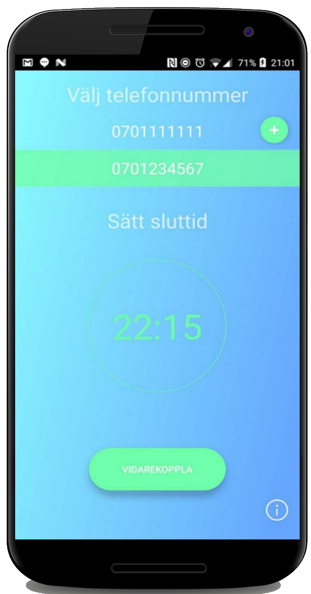

Notera att alla telefoner inte stödjer vidarekoppling
Med Vidarekopplaren kan du enkelt vidarekoppla din telefon till vilket nummer du vill, under en tid som du själv bestämmer.
Vill du avsluta tidigare än beräknat?
Tryck bara på Avsluta. Antingen i widgeten, eller i appen.